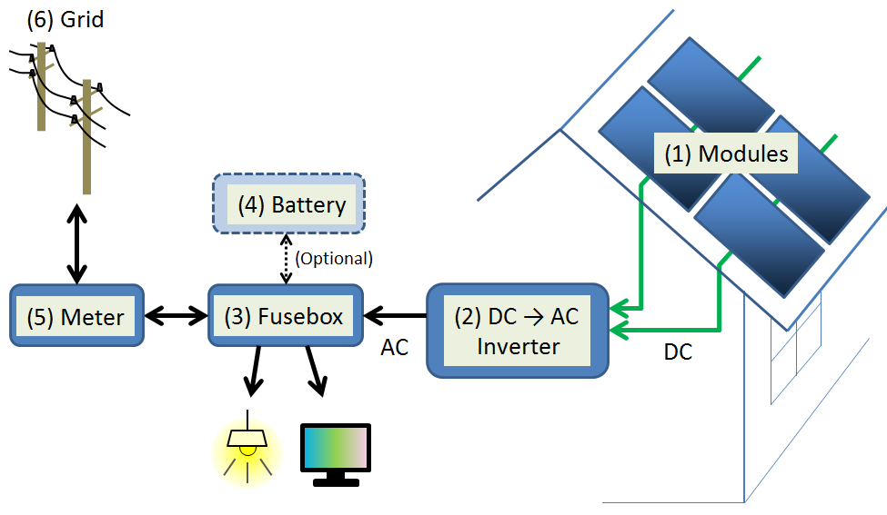

Solar shingles are installed on a rooftop. Credit: Stellar Sun Shop The United States currently relies heavily on coal, oil, and natural gas for its energy. Fossil fuels are non-renewable, that is, they draw on finite resources that will eventually dwindle, becoming too expensive or too environmentally damaging to retrieve. In contrast, the many types of renewable energy resources-such as wind and solar energy-are constantly replenished and will never run out. Most renewable energy comes either directly or indirectly from the sun. Sunlight, or solar energy, can be used directly for heating and lighting homes and other buildings, for generating electricity, and for hot water heating, solar cooling, and a variety of commercial and industrial uses.
 solar moudelParabolic-trough systems concentrate the sun's energy through long rectangular, curved (U-shaped) mirrors. The mirrors are tilted toward the sun, focusing sunlight on a pipe that runs down the center of the trough. This heats the oil flowing through the pipe. The hot oil then is used to boil water in a conventional steam generator to produce electricity. A dish/engine system uses a mirrored dish (similar to a very large satellite dish). The dish-shaped surface collects and concentrates the sun's heat onto a receiver, which absorbs the heat and transfers it to fluid within the engine. The heat causes the fluid to expand against a piston or turbine to produce mechanical power. The mechanical power is then used to run a generator or alternator to produce electricity. A power tower system uses a large field of mirrors to concentrate sunlight onto the top of a tower, where a receiver sits. This heats molten salt flowing through the receiver. Then, the salt's heat is used to generate electricity through a conventional steam generator. Molten salt retains heat efficiently, so it can be stored for days before being converted into electricity. That means electricity can be produced on cloudy days or even several hours after sunset..